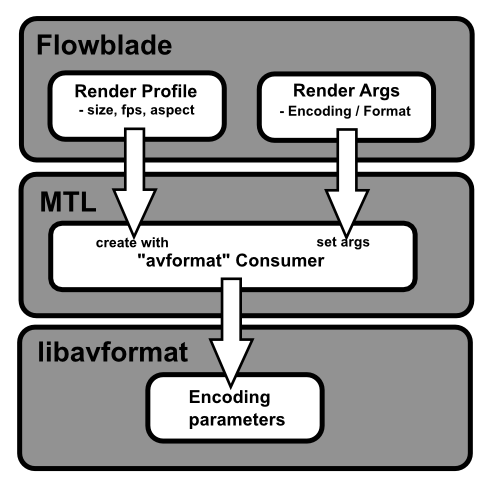

In Flowblade there are two ways to render output:
- Render Panel in the top left notebook in the main window.
- Batch Render Queue application that can launched from Render menu.
Almost all the encodings available for FLOSS applications can used in Flowblade.
Render Panel

[1] Folder select button. Select folder to place the output file in.
[2] File Name text entry widget. Set the name of the output file.
[3] Render Profile section.
- Use Project Profile check button. Uncheck to select some other then project profile to be used for rendered video.
- Project Select drop down menu. Select project profile for rendering.
- Project Info. Dimensions, frames per second, pixel aspect, colorspace.
[4] Encoding Format section.
- Encoding / File Type drop down menu. Select encoding and container format for rendering.
- Bitrate drop down menu. Select bitrate for rendering. No selections available for some encodings.
- Sample Rate drop down menu. Select audio sample rate for rendering. No selections available for some encodings
[5] Render Using Args row.
- Render Using Args checkbox. Activating makes rendering use list of defined arguments instead of preset options selected in Encoding Format section.
- Args Info text. Only visible when args rendering activated.
- Set Args popup launcher. becomes active when args rendering activated.
[6] Range defines output render range, either the full Sequence length or the area between Timeline Mark In and Mark Out.
[7] Performance and Quality settings launcher. Displays Preferences dialog Performance panel with some rendering related options.
[8] To Queue button. Creates a render item with current render settings and Sequence state. Opens Batch Render application to display the newly created render item.
[9] Render button. Launcher rendering of current Sequence with selected render options.
Rendering output
- Press Render Button to begin rendering.
- A Render Window will open displaying information on file path of render file, estimated time left, render time and a Progress bar widget.
- After rendering is complete, Render Window will close automatically.
Rendering behind the scenes: MLT and libavformat(FFMpeg)
Flowblade Movie Editor is a Python application interfacing to MLT multitrack media framework. Other video editing applications build on top of MLT include OpenShot and Kdenlive.
MLT uses C-library libavformat(FFMpeg) to render output files, and rendering is defined by setting FFMpeg encoding parameters. These parameters are delivered from Flowblade Movie Editor to MLT by creating a "avformat" Consumer object for a given Render Profile, and then setting its Rendering Args. These latter arguments are exactly the same which are used when using FFmpeg to encode video files.
Rendering arguments for encoding different types of video files are pre-packed and can be selected using Encocing / Format and Quality Drop Down Menus. Arguments can be refined by checking Render with args Checkbox and changing args values and/or adding/removing args.
Any kind of video files supported by the installed version of MLT can be encoded by creating a user defined Render Profile and setting its Rendering Args. Google for FFMpeg encoding to find Args combinations for different video files.
Search web for information on encoding files with FFMpeg to get examples of Rendering Args that can be used.
Flowblade rendering pipeline
